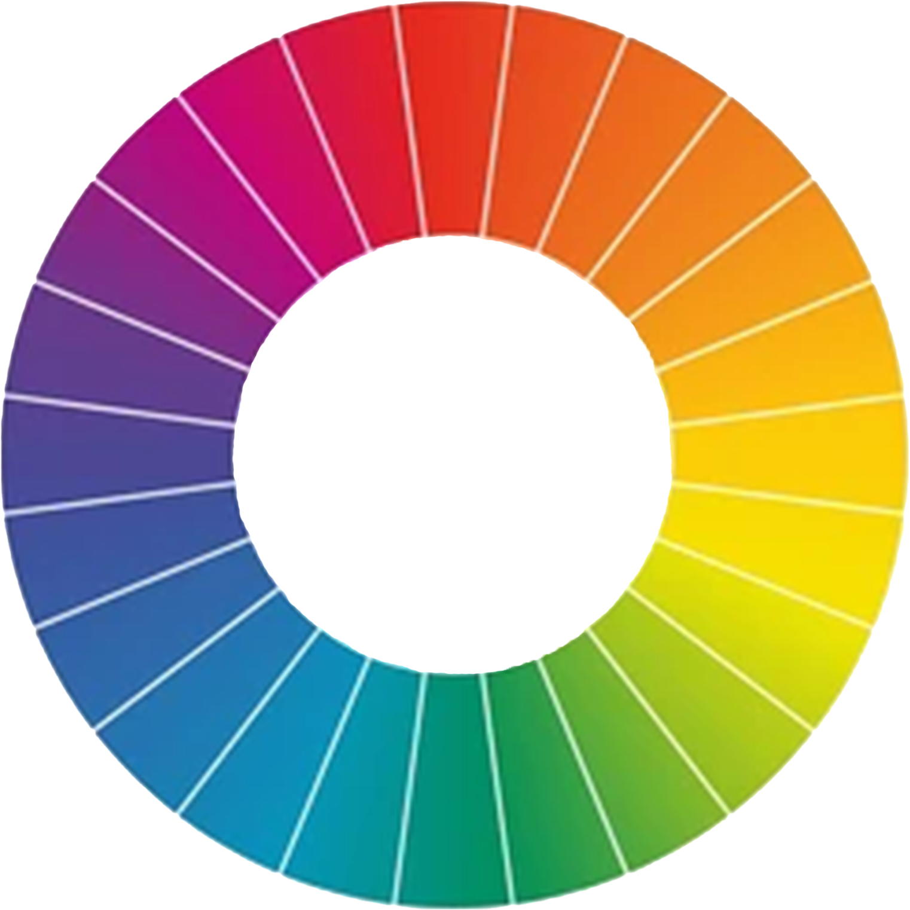
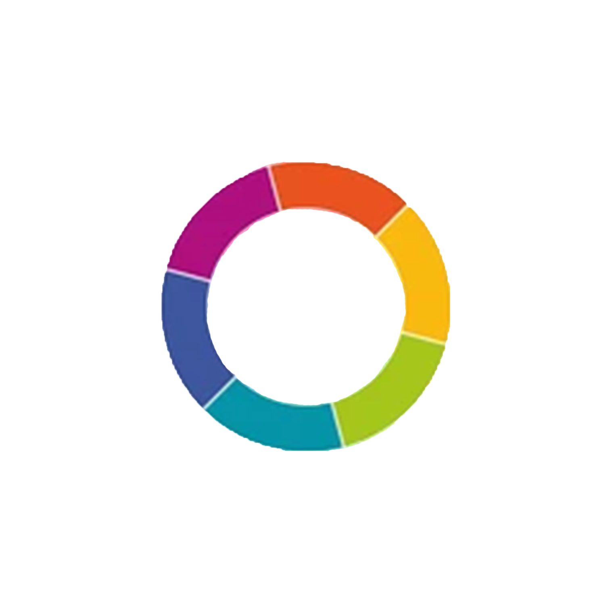
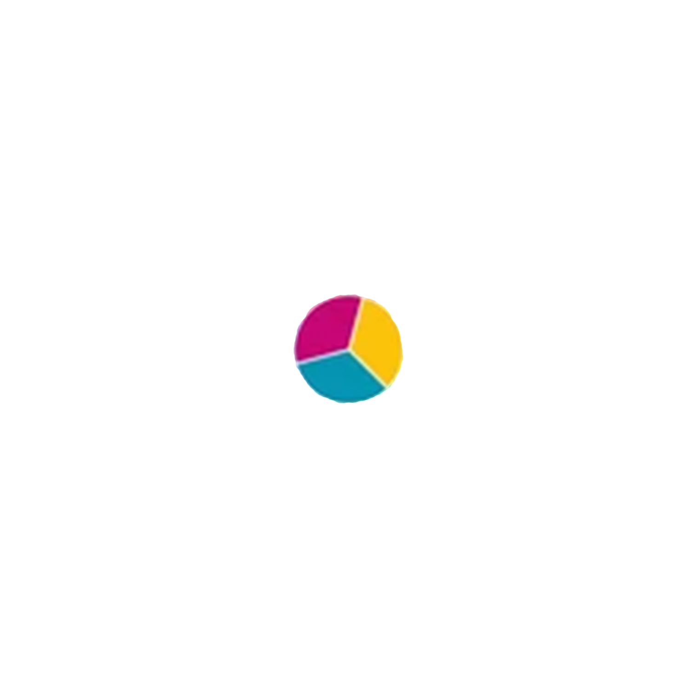
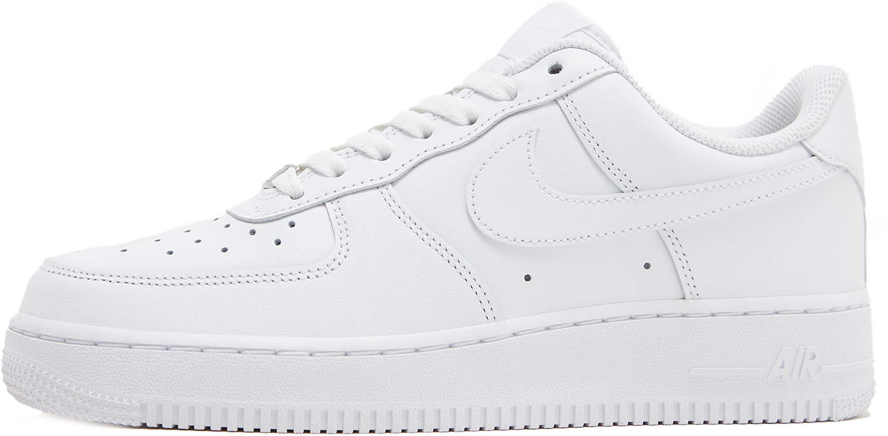
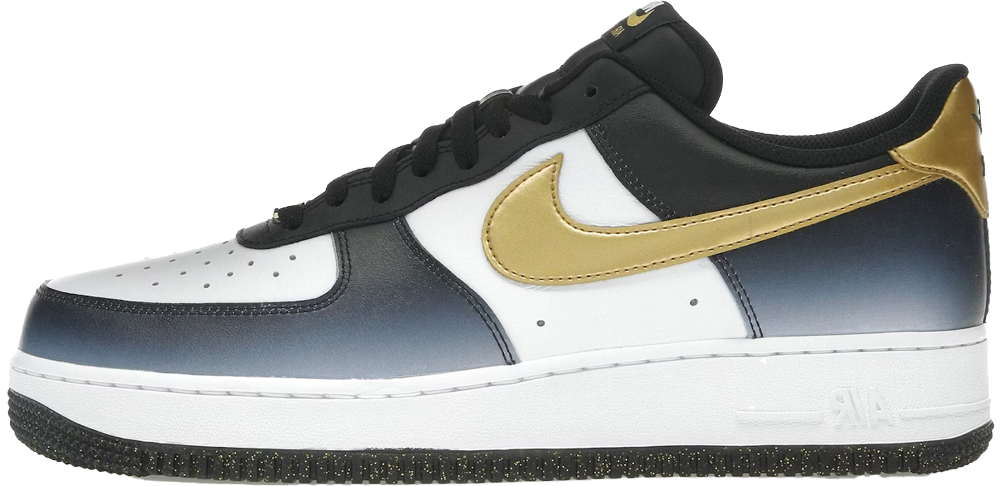
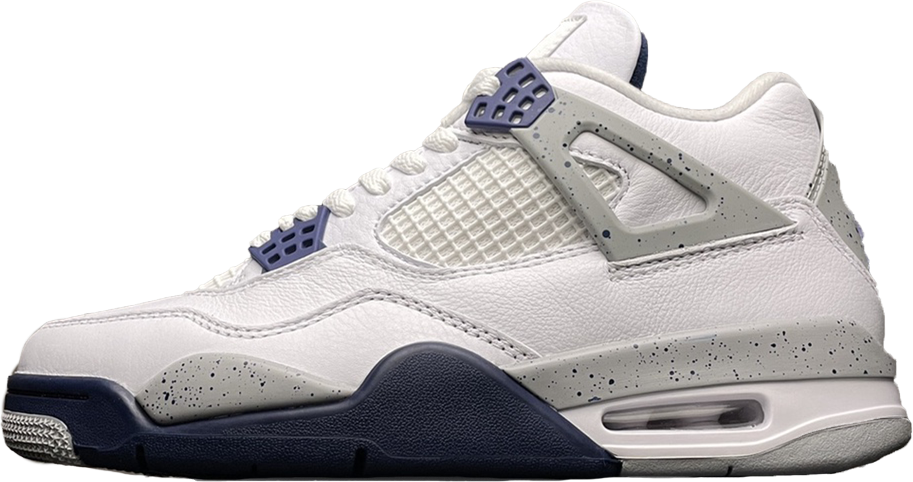
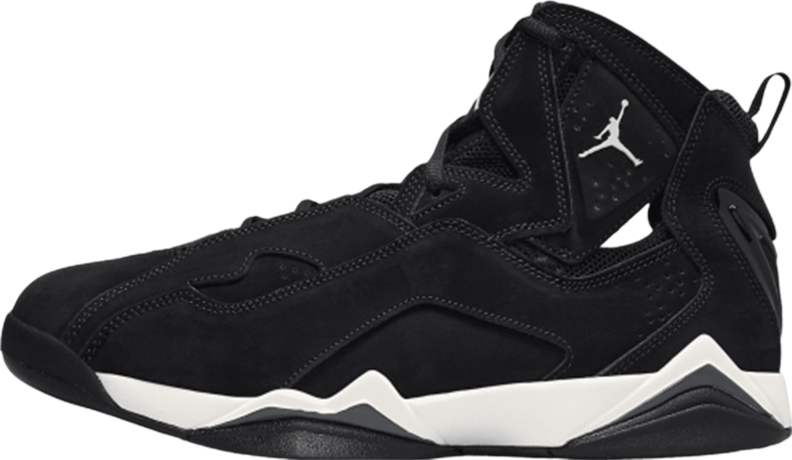

J’ai commencé ma collection de durags, couvre-chef en tissu porté sur la tête, en 2023 car j’ai décidé que j’allais avoir des waves. Pour protéger mes cheveux, il me fallait donc des durags. Ma collection s’est agrandie car je ne laissais plus mes cheveux à l’air libre sauf si c’était pour une grande occasion. En raison de cela, il me fallait multiples couleurs de ces couvre-chefs afin qu’ils s’accordent bien avec mes différentes tenues et chaussures.






